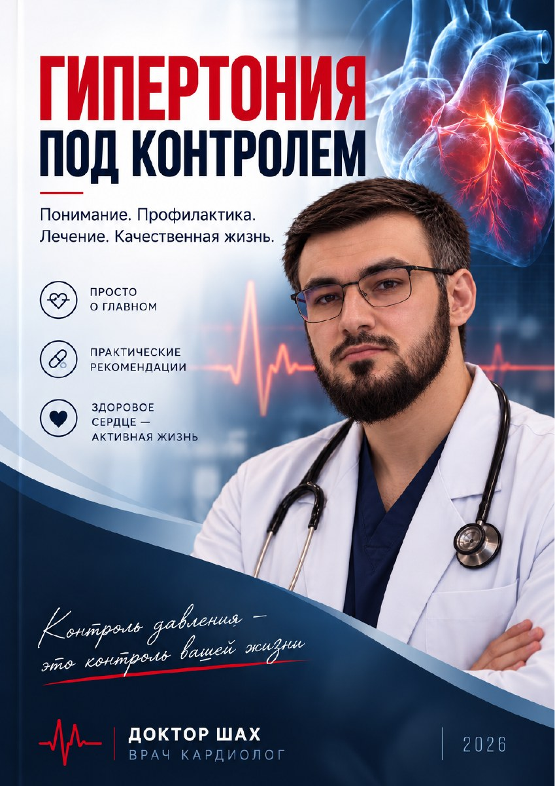
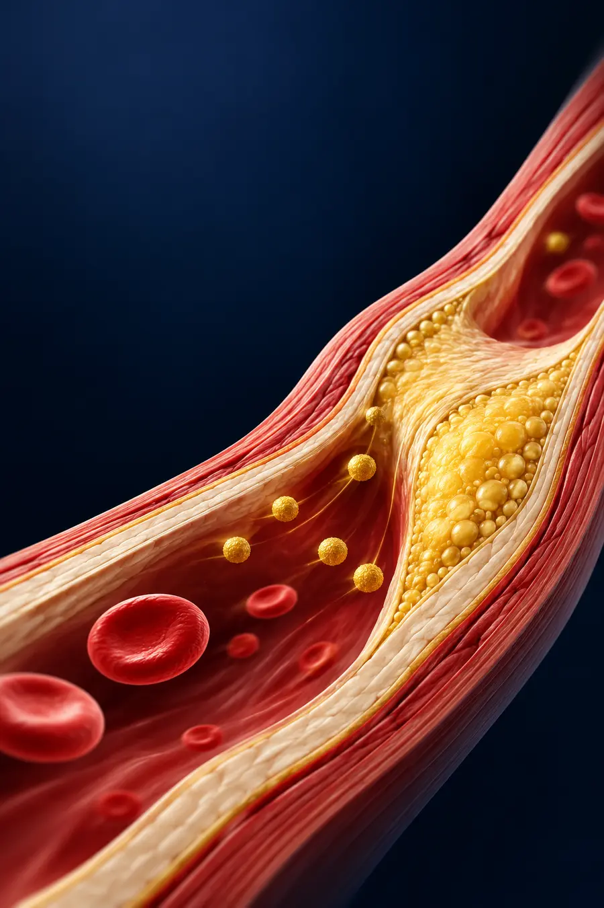
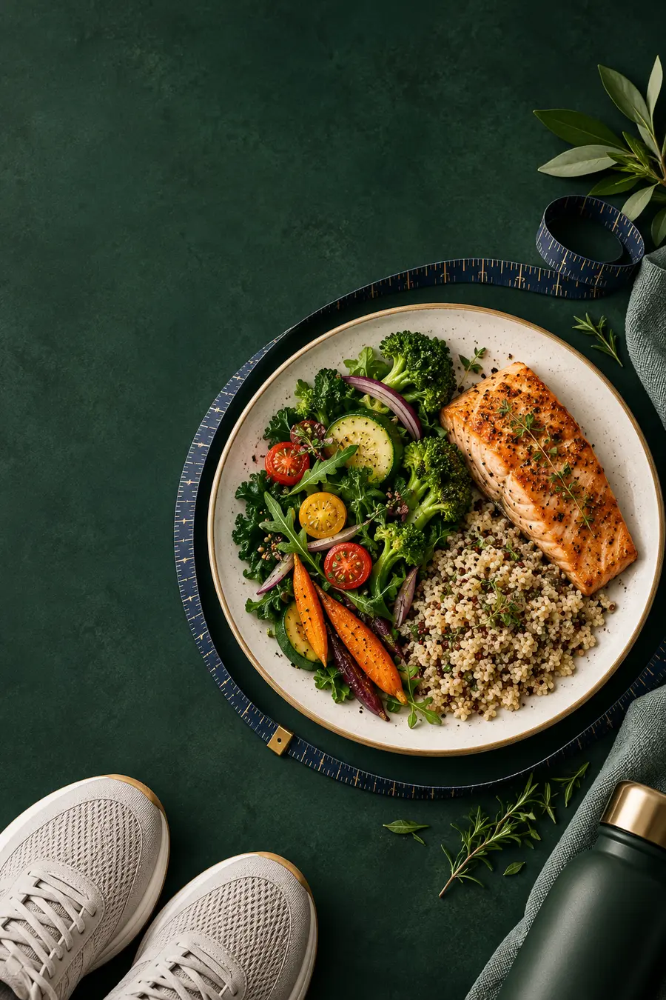

Давление и тахикардия
Скачки давления, гипертония, высокий пульс и подбор понятной тактики контроля.
Доказательная медицина · Москва
Шахмандаров Шахмандара Ярагиевич
врач-терапевт-кардиолог
Помогаю разобраться в причинах симптомов, понять результаты обследований и выстроить понятный путь к контролю здоровья.
С чем ко мне обращаются
Здоровье редко укладывается в один показатель. Я рассматриваю жалобы, обследования и образ жизни в единой картине.
Скачки давления, гипертония, высокий пульс и подбор понятной тактики контроля.
Разбор липидограммы, оценка сосудистого риска, питание и вопросы о статинах.
Экстрасистолия, фибрилляция предсердий, перебои и подбор дальнейшей тактики.
Снижение веса без жёстких диет с учётом давления, сердца и общего состояния.
Проверяю диагноз, назначения, результаты исследований и необходимость госпитализации или операции.
Помогаю разобраться с болью в груди, одышкой, сердцебиением, рисками и результатами обследований.
Соединяю жалобы, анализы, обследования и образ жизни в понятный план действий.
Контролирую динамику состояния и помогаю корректировать дальнейшие шаги вместе с лечащим врачом.
Каждый день в клинической практике
Ежедневно я сталкиваюсь с разными клиническими ситуациями. Это помогает видеть не отдельный анализ или жалобу, а взаимосвязи — и объяснять сложное простым языком.
Мои методички
Я собрал практические материалы, которые помогают подготовиться к разговору с врачом и лучше понимать своё состояние.

Пошаговая система, чтобы понимать свои цифры, грамотно контролировать давление и не теряться в назначениях.

Понятный разбор липидограммы, сердечно-сосудистого риска и терапии — без мифов и страха перед статинами.

Готовая система питания, движения и контроля прогресса, которую можно встроить в жизнь без голодания и крайностей.
Большой навигатор для родителей: обследования, врождённые заболевания, тревожные признаки, спорт и прививки.
Методические материалы носят информационный характер и не заменяют очную консультацию врача.
Обо мне
Я работаю в частных и государственных клиниках Москвы. В медицине 9 лет: начинал фельдшером скорой помощи, с 2020 года работаю врачом, с 2022 года — кардиологом.
Отзывы пациентов
Пришла с очень высоким давлением. После полноценной консультации и подбора препаратов давление нормализовалось.
Пациентка +7 916 76XXXXX19 февраля 2026 · отзыв проверенПосле миоперикардита получил понятные рекомендации: на что обратить внимание во время лечения и реабилитации.
Пациент +7 916 42XXXXX19 февраля 2026 · отзыв проверенДоктор внимательно изучил анализы и обследования, а затем дал конкретные рекомендации по препаратам и дальнейшему лечению.
Пациент +7 977 33XXXXX21 октября 2025 · отзыв проверенМужу рекомендовали статины. Доктор изучил исследования, подобрал терапию и помог спокойно разобраться в пользе лечения.
Пациент +7 910 48XXXXX16 июня 2025 · отзыв родственникаОбратилась с жалобами. После изучения анамнеза и обследований доктор исключил кардиологическую причину и не назначил лишнего.
Пациентка +7 910 46XXXXX20 мая 2025 · отзыв проверенПосле тяжёлой пневмонии мама пришла на кардиологический контроль. Доктор внимательно выслушал, осмотрел и назначил необходимые анализы.
Пациент +7 916 48XXXXX8 апреля 2025 · отзыв родственникаДавление повышалось вторую неделю. После приёма появились понятный план обследования, лечение и мотивация серьёзно заняться образом жизни.
Пациентка +7 928 56XXXXX12 марта 2025 · отзыв проверенРегулярно наблюдается у доктора: он внимательно сравнивает результаты анализов и обследований и корректирует лечение по динамике.
Пациентка +7 925 31XXXXX6 марта 2025 · отзыв проверенПришла за вторым мнением по врождённой патологии сердца. После приёма решила продолжить наблюдение именно у доктора.
Пациентка +7 915 44XXXXX2 марта 2025 · отзыв проверенДоктор простыми словами объяснил причину заболевания, ответил на вопросы и составил план дополнительных обследований.
Пациентка +7 988 26XXXXX28 февраля 2025 · отзыв проверенПосле стационара подробно разобрал все препараты мамы, возможные осложнения и варианты замены, а также сразу оценил ЭКГ.
Пациент +7 965 99XXXXX12 февраля 2025 · отзыв родственникаОтцу долго не могли подобрать терапию от высокого давления. За несколько приёмов лечение скорректировали, состояние улучшилось.
Пациент +7 964 05XXXXX6 февраля 2025 · отзыв родственникаУ 18-летнего сына врождённый порок клапана. Доктор понял, что наблюдения уже недостаточно, и вовремя направил к кардиохирургу.
Пациент +7 926 96XXXXX21 января 2025 · отзыв родственникаПеред госпитализацией доктор внимательно выслушал, назначил необходимые анализы и помог оперативно решить вопрос по здоровью.
Пациентка +7 967 28XXXXX19 января 2025 · отзыв проверенПеред операцией отца доктор назначил дообследования, скорректировал лечение и после результатов дал кардиологическое заключение.
Пациент +7 917 50XXXXX14 января 2025 · отзыв родственникаПри врождённом пороке сердца доктор провёл полный осмотр и направил к аритмологу в стационар. Пациентка решила наблюдаться у него дальше.
Пациентка +7 928 58XXXXX10 января 2024 · отзыв проверенЧастые вопросы
Коротко о том, как получить методичку и что делать, если возник вопрос после оплаты.
В электронном формате PDF. Её можно открыть на телефоне, планшете или компьютере и сохранить для личного использования.
Нажмите «Купить» у нужной методички. Откроется защищённая страница оплаты, где будут показаны доступные способы. Итоговая цена всегда видна до подтверждения платежа.
После подтверждения оплаты методичка придёт вам в Telegram. Если материал не пришёл или не открывается, напишите в технический Telegram-аккаунт. Контакт также указан ниже.
Если доступ не предоставлен, файл имеет технический недостаток или платёж прошёл повторно, напишите в технический Telegram-аккаунт. Обращение рассмотрят по закону и при необходимости повторно предоставят исправный файл либо оформят возврат. Покупка методички не ограничивает ваши законные права потребителя.
Нет. Это информационно-образовательный материал, а не индивидуальная диагностика или назначение лечения. Если есть симптомы, диагноз или вопросы по терапии, нужен персональный приём врача.
Сообщите об этом администратору как можно раньше. Условия переноса и возврата оплаты зависят от правил частной клиники, в которой проходит приём, и сообщаются до записи.
Напишите в технический Telegram-аккаунт и укажите название методички, дату и способ оплаты. Не отправляйте в сообщении полные реквизиты банковской карты.
Очная консультация в Москве
Оставьте контактные данные. Мой администратор свяжется с вами в течение дня в выбранном мессенджере, уточнит детали и согласует дату.